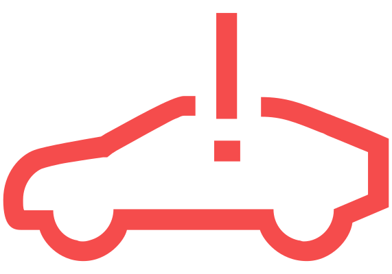

Température élevée de la batterie haute tension - risque d'incendie !

brille avec

Message de danger d'incendie, tonalité d'avertissement continue
Le klaxon peut retentir lorsque le véhicule est garé.

Arrêter immédiatement le véhicule en tenant compte de la situation actuelle de la circulation.
Garer le véhicule dans un endroit sûr, de préférence dans un espace ouvert, loin des bâtiments, des autres véhicules et des objets inflammables.
Allumer les feux de détresse.
Sélectionner le
 mode de transmission automatique.
mode de transmission automatique.Sécuriser le véhicule à l’aide du frein de stationnement.
Couper le contact.
Garder la clé du véhicule bien en vue des services de secours, par ex. dans la console centrale.
Sortir du véhicule et s’assurer qu'il n'y a pas d'autres personnes ou animaux dedans.
Maintenir les autres passagers à une distance de sécurité du véhicule et de la circulation routière, par ex. derrière la glissière de sécurité.
Signaler immédiatement le risque d’incendie aux services d’urgence et informez-les qu’il s’agit d’un véhicule avec une batterie haute tension.
N'essayez pas de résoudre le problème vous-même !


Avec un message concernant le risque d'incendie le processus de charge et d'autres fonctions peuvent s'interrompre.

MISE EN GARDE
Danger d'électrocution mortelle, risque de brûlures ou de blessures !
En cas d'incendie, des gaz toxiques et inflammables peuvent être libérés. Les composants du système haute tension peuvent être sous tension.
Sortir du véhicule et rester à l'écart.
La tonalité d'avertissement permanente ne peut être désactivée que dans un atelier spécialisé. Nous recommandons de faire effectuer la désactivation par un partenaire de services Škoda.
Erreur du système de propulsion électrique
allumé
Message concernant un défaut dans le système électrique
Ne reprenez pas la route ! Arrêter le véhicule et couper le contact.
Faites appel à l’assistance d’un atelier spécialisé.

allumé
Message concernant un défaut dans le système électrique
Il est possible de continuer à conduire avec précaution.
Faites immédiatement appel à l'assistance d'un atelier spécialisé.

Système électrique surchauffé
est allumé avec

Message concernant une surchauffe dans le système électrique
Ne reprenez pas la route ! Arrêter le véhicule et couper le contact.
Ne pas rajouter de liquide de refroidissement !
Faites appel à l’assistance d’un atelier spécialisé.